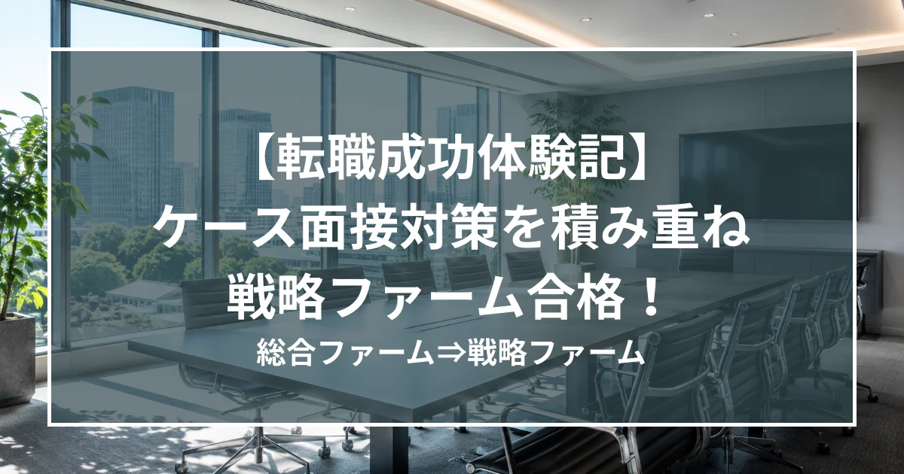

【体験記】ケース面接対策を積み重ね掴んだ戦略ファーム合格！

はじめに
現職の総合ファームではIT系プロジェクトに関わる機会が多く、ビジネスサイドの経験を積みたく、戦略ファームへの転職を決意しました。
現職には中途入社しており、その時は別の転職エージェントにお世話になっていました。しかし、実務経験のある方からケース面接のアドバイスを受けることが重要と考え、面接官としての経験も豊富な村木さんに支援をいただくことに決めました。
手厚いサポート
現職が忙しく、まとまった時間を確保するのが難しかったため、短期集中ではなく、長めのタイムラインで準備しました。
その中で特にお世話になったのは、職務経歴書（書類選考）の作成とケース面接の対策です。
職務経歴書の作成においては、単なる経歴の棚卸し、事実・結果の羅列ではなく、自身がどのような課題を、どのような仮説に基づいて解決したのか、どのように能動的なアクションを行ったのかという点を徹底的に深掘りしました。何度も細かく添削をいただき、書類選考は7割ほど通過しました。
ケース面接の対策においては、ステラキャリアズが主催するオンラインサロンに加え、村木さんとの1対1面談も何度も組ませていただき、対策を重ねました。
現職のITコンサルティングは投資規模こそ大きい一方で、あるべき姿や課題などは具体的なものが多く、限られた時間で仮説を立て、ロジカルな説明が必要なケース面接には非常に苦労しました。その中でも、村木さんからGood/Moreポイントを的確にフィードバックいただき、着実にスキルアップできました。
徹底的な候補者視点
前述の通り業務都合で、まとまった時間を確保することは難しかったのですが、選考のタイミング等を細かく配慮、ご調整いただきました。特に、各社の過去の出題ケースや（面接官の名前が事前に開示されていたファームの）面接官の特徴のご展開、オファーレターへの承諾期限調整等、各社の選考プロセスを熟知しているからこそのフルサポートに大変助けられました。
最後に
期間を通じ、村木さんをはじめ、ステラキャリアズの皆様からは、ご自身の経験に裏打ちされたフィードバックを多くいただきました。また、転職という枠を超えて長期的な目線でのキャリア相談も多くさせていただき、転職活動を通じて自身の視野を広げることができました。
着実にケース対策を行いたい方、今後のキャリアに悩んでいる方は、ぜひ村木さんに相談してみることをお勧めします。
Go back to Insight